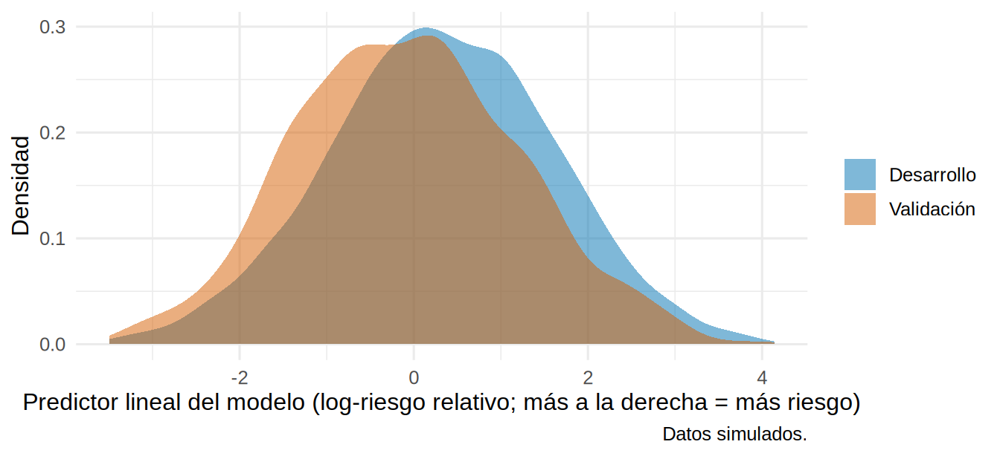
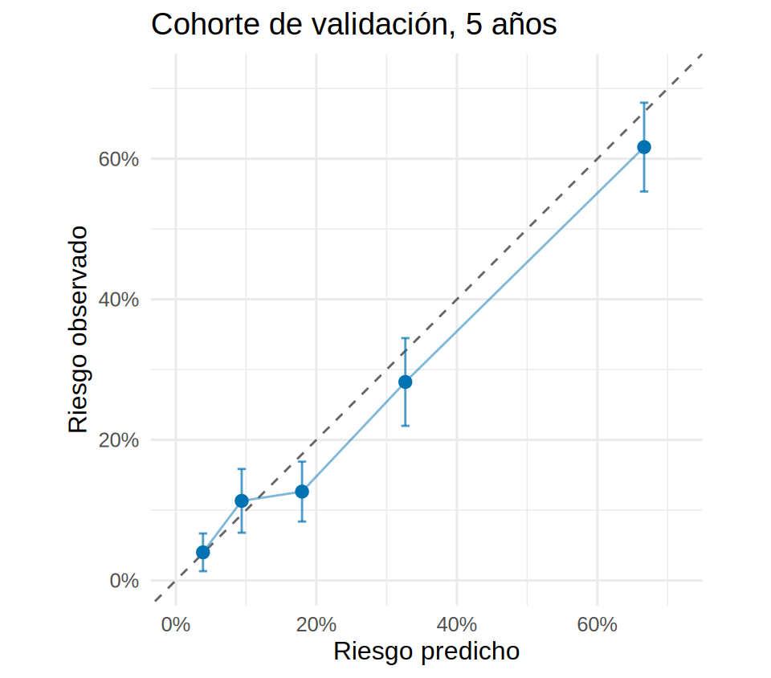
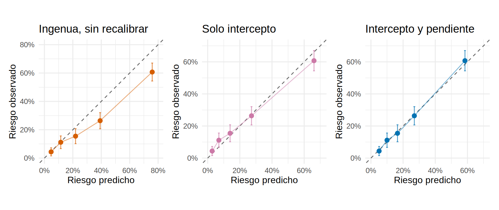
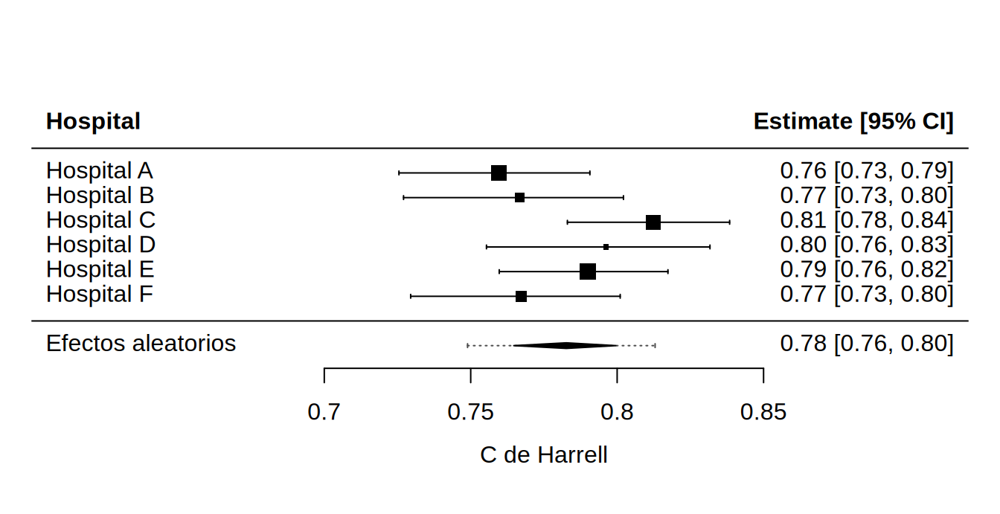

library(tidyverse)
library(survival)
library(riskRegression)
library(patchwork)
library(pROC)
source("R/funciones_extra_c17.R")
source("R/tabla1.R")
source("R/simular_cohorte_pronostico.R") # para simular otros hospitales en el paso 5
theme_set(theme_minimal(base_size = 12))
f2 <- \(x) sprintf("%.2f", x)
f3 <- \(x) sprintf("%.3f", x)
dev <- read_csv("Bases/cohorte_pronostico.csv", show_col_types = FALSE) |> preparar_pronostico()
val <- read_csv("Bases/cohorte_validacion.csv", show_col_types = FALSE) |> preparar_pronostico() # hospital regional (SIMULADO)
mm <- ajustar_modelos_pronostico(dev) # el modelo CONGELADO de 17.2: se ajusta solo con la cohorte de desarrollo
# La "verdad" de la población del hospital regional: 100 000 pacientes como los de validación, sin censura
oraculo_val <- oraculo_pronostico(100000, "validacion", semilla = 98)Validación externa y recalibración: ¿funciona mi modelo en otro hospital?
Nota🩺 Escenario
Tu calculadora de riesgo de falla renal se construyó en un hospital universitario. Un hospital regional quiere usarla, pero allí los pacientes son más mayores y con mejor TFGe. El director pregunta: “¿Esto funciona con nuestros pacientes?”. Ninguna validación interna puede responder, porque los datos del otro hospital no existen todavía para el modelo. Hace falta una validación externa: aplicar el modelo tal cual (sin reajustarlo) a pacientes distintos y medir qué tal le va.
La validación externa evalúa el modelo en datos que no se usaron para construirlo: de otro tiempo (validación temporal), otro lugar (geográfica) o con otra forma de medir los predictores o el desenlace. Un modelo nunca queda “validado” para siempre: su rendimiento varía con la población, y lo que hay que preguntarse es en qué poblaciones funciona y en cuáles no (Collins y cols., BMJ 2024; lectura del autor).
Lo que vamos a hacer
- Describir qué cambió entre la cohorte de desarrollo y la de validación (case-mix).
- Aplicar el modelo congelado y medir discriminación y calibración en la cohorte nueva, contra la verdad.
- Recalibrar (intercepto, pendiente, reajuste) cuando haga falta, y ver los riesgos de hacerlo.
- Ver qué pasa en varios hospitales a la vez (heterogeneidad).
Paso 1: ¿qué cambió entre las dos cohortes?
Antes de medir nada, mira quiénes son los pacientes nuevos. Eso se llama perfil de casos o case-mix. Reutilizamos la tabla1() del libro con una columna por cohorte (y la DEM, la diferencia estandarizada, para saber cuánto difieren).
ambas <- bind_rows(dev |> mutate(cohorte = "Desarrollo"), val |> mutate(cohorte = "Validación"))
etiquetas <- c(edad = "Edad, años", sexo = "Sexo", tfg = "TFGe", uacr = "UACR, mg/g", albumina = "Albúmina, g/dL",
fosforo = "Fósforo, mg/dL", bicarbonato = "Bicarbonato, mEq/L", dm = "Diabetes", ecv = "ECV previa")
t1 <- tabla1(ambas, vars = names(etiquetas), grupo = "cohorte", no_normales = "uacr",
binarias = c("dm", "ecv"), etiquetas = etiquetas, valor_p = FALSE)
knitr::kable(t1[, c("Variable", "Desarrollo", "Validación", "DEM")])| Variable | Desarrollo | Validación | DEM |
|---|---|---|---|
| n | 3000 | 1500 | |
| Edad, años, media (DE) | 65.8 (11.8) | 69.4 (11.7) | 0.30 |
| Sexo, n (%) | |||
| Mujer | 1361 (45.4%) | 681 (45.4%) | 0.00 |
| Hombre | 1639 (54.6%) | 819 (54.6%) | -0.00 |
| TFGe, media (DE) | 27.0 (7.8) | 29.9 (7.9) | 0.37 |
| UACR, mg/g, mediana [Q1, Q3] | 354.5 [139.0, 886.2] | 338.0 [139.0, 844.5] | -0.02 |
| Albúmina, g/dL, media (DE) | 3.9 (0.4) | 3.9 (0.4) | -0.05 |
| Fósforo, mg/dL, media (DE) | 3.7 (0.6) | 3.6 (0.6) | -0.18 |
| Bicarbonato, mEq/L, media (DE) | 23.0 (3.1) | 23.2 (3.1) | 0.05 |
| Diabetes, n (%) | 1254 (41.8%) | 641 (42.7%) | 0.02 |
| ECV previa, n (%) | 770 (25.7%) | 417 (27.8%) | 0.05 |
La cohorte de validación (datos simulados) es 3.53 años mayor y tiene una TFGe 2.89 mL/min más alta. Las demás variables son parecidas. Y los desenlaces, ¿se parecen?
desenlaces <- map_dfr(list(Desarrollo = dev, Validacion = val), \(d) {
tibble(falla_renal_5a = cif_observada(d$tiempo_meses, d$estado, 60, causa = 1)$est,
muerte_sin_falla_5a = cif_observada(d$tiempo_meses, d$estado, 60, causa = 2)$est)
}, .id = "cohorte")
desenlaces |> mutate(across(where(is.numeric), \(x) round(x, 3)))# A tibble: 2 × 3
cohorte falla_renal_5a muerte_sin_falla_5a
<chr> <dbl> <dbl>
1 Desarrollo 0.341 0.218
2 Validacion 0.234 0.245En el hospital regional el riesgo de falla renal a 5 años es más bajo (23 % frente a 34 %) y el de muerte antes de la diálisis, más alto (25 % frente a 22 %). Es el efecto esperado de pacientes mayores con mejor función renal. El modelo debería reconocer esa diferencia a través de sus predictores (edad, TFGe) y bajar los riesgos; la validación dirá si lo hace con exactitud.
También conviene mirar cuánto varía el riesgo predicho en cada cohorte (el predictor lineal, LP), porque la discriminación depende de esa dispersión: con una población más homogénea es más difícil ordenar.
tibble(cohorte = c(rep("Desarrollo", nrow(dev)), rep("Validación", nrow(val))),
lp = c(predict(mm$krt, dev, type = "lp"), predict(mm$krt, val, type = "lp"))) |>
ggplot(aes(lp, fill = cohorte)) +
geom_density(alpha = 0.5, color = NA) +
scale_fill_manual(values = c(Desarrollo = "#0072B2", Validación = "#D55E00")) +
labs(x = "Predictor lineal del modelo (log-riesgo relativo; más a la derecha = más riesgo)", y = "Densidad", fill = NULL,
caption = "Datos simulados.")
La distribución de la cohorte de validación está desplazada a la izquierda (menos riesgo), con una dispersión similar.
Paso 2: aplicar el modelo congelado y medir
Aplicamos el mismo modelo (coeficientes y riesgo basal de la cohorte de desarrollo, sin tocar nada) a la cohorte de validación, y evaluamos con las lentes de 17.3: discriminación (C de Harrell y AUC a 2 y 4 años), calibración (a 5 años) y error global (Brier). Comparamos tres columnas: el aparente del desarrollo, la muestra de validación y la verdad de esa población (oráculo).
# --- Muestra de validación (con censura) ---
pred_val <- map(c(24, 48, 60), \(t) cif_cox(mm$krt, mm$muerte, val, t)) |> set_names(c(24, 48, 60))
c_val <- c_harrell(predict(mm$krt, val, type = "lp"), val$tiempo_meses, val$krt)
sc_val <- Score(list(modelo = do.call(cbind, pred_val[1:2])), formula = Hist(tiempo_meses, estado) ~ 1,
data = as.data.frame(val), times = c(24, 48), metrics = c("AUC", "Brier"), cause = 1,
null.model = TRUE, summary = "ipa")
cal_val <- resumen_calibracion(pred_val[["60"]], val$tiempo_meses, val$estado, 60)
# --- La verdad (oráculo, sin censura) ---
pred_or <- map(c(24, 48, 60), \(t) cif_cox(mm$krt, mm$muerte, oraculo_val, t)) |> set_names(c(24, 48, 60))
y_or <- \(t) as.numeric(oraculo_val$estado == 1 & oraculo_val$tiempo_meses <= t)
c_or <- c_harrell(predict(mm$krt, oraculo_val, type = "lp"), oraculo_val$tiempo_meses, oraculo_val$krt)
auc_or <- map_dbl(c(24, 48), \(t) as.numeric(auc(y_or(t), pred_or[[as.character(t)]], quiet = TRUE)))
cal_or <- resumen_calibracion(pred_or[["60"]], oraculo_val$tiempo_meses, oraculo_val$estado, 60)
brier_or <- mean((y_or(24) - pred_or[["24"]])^2)# Valores del desarrollo (aparente), tomados de 17.3 con el mismo modelo
pred_dev <- map(c(24, 48), \(t) cif_cox(mm$krt, mm$muerte, dev, t)) |> set_names(c(24, 48))
sc_dev <- Score(list(modelo = do.call(cbind, pred_dev)), formula = Hist(tiempo_meses, estado) ~ 1,
data = as.data.frame(dev), times = c(24, 48), metrics = c("AUC", "Brier"), cause = 1, null.model = FALSE)
cal_dev <- resumen_calibracion(cif_cox(mm$krt, mm$muerte, dev, 60), dev$tiempo_meses, dev$estado, 60)
tibble(
medida = c("C de Harrell", "AUC a 2 años", "AUC a 4 años", "O/E a 5 años", "Pendiente a 5 años", "Brier a 2 años"),
`Desarrollo (aparente)` = c(c_harrell(predict(mm$krt, dev, type = "lp"), dev$tiempo_meses, dev$krt)[["C"]],
sc_dev$AUC$score$AUC, cal_dev$oe, cal_dev$pendiente, sc_dev$Brier$score$Brier[1]),
`Validación (n = 1 500)` = c(c_val[["C"]], sc_val$AUC$score$AUC, cal_val$oe, cal_val$pendiente,
sc_val$Brier$score$Brier[sc_val$Brier$score$model == "modelo"][1]),
`Verdad (oráculo)` = c(c_or[["C"]], auc_or, cal_or$oe, cal_or$pendiente, brier_or)
) |> mutate(across(where(is.numeric), \(x) round(x, 3))) |> knitr::kable()| medida | Desarrollo (aparente) | Validación (n = 1 500) | Verdad (oráculo) |
|---|---|---|---|
| C de Harrell | 0.799 | 0.794 | 0.788 |
| AUC a 2 años | 0.838 | 0.812 | 0.819 |
| AUC a 4 años | 0.817 | 0.812 | 0.811 |
| O/E a 5 años | 0.995 | 0.897 | 0.959 |
| Pendiente a 5 años | 1.035 | 0.880 | 0.938 |
| Brier a 2 años | 0.126 | 0.104 | 0.103 |
Qué vemos.
- La discriminación aguanta: C de 0.79 en la validación y 0.79 en la verdad, frente a 0.80 en el desarrollo. Los riesgos relativos se trasladan bien a la otra población.
- La calibración es más delicada: en la muestra de validación el cociente O/E a 5 años es 0.90 (el modelo predice 26 % y se observa 23 %) y la pendiente 0.88 (error estándar 0.07): sugiere una ligera sobreestimación. En la verdad (población de 100 000 pacientes) las cifras son O/E 0.96 y pendiente 0.94: el modelo funciona razonablemente bien, con una ligera tendencia a sobreestimar.
- La diferencia entre la muestra y la verdad es ruido de muestreo: 1 500 pacientes con 308 eventos dan un O/E con un margen del orden de ±10 %. Una validación pequeña no puede distinguir esos matices.
Veamos la calibración a 5 años por quintiles y, ya que tenemos la información, el rendimiento por subgrupos (importante para ver si el modelo falla en algún grupo, por ejemplo por sexo).
grafico_calibracion(tabla_calibracion(pred_val[["60"]], val$tiempo_meses, val$estado, 60, 5),
"Cohorte de validación, 5 años", "#0072B2")
por_subgrupo <- function(d) {
tibble(n = nrow(d), eventos = sum(d$krt),
C = c_harrell(predict(mm$krt, d, type = "lp"), d$tiempo_meses, d$krt)[["C"]],
oe = cif_observada(d$tiempo_meses, d$estado, 60)$est / mean(cif_cox(mm$krt, mm$muerte, d, 60)))
}
bind_rows(Mujer = por_subgrupo(filter(val, sexo == "Mujer")), Hombre = por_subgrupo(filter(val, sexo == "Hombre")),
`Sin diabetes` = por_subgrupo(filter(val, dm == 0)), `Con diabetes` = por_subgrupo(filter(val, dm == 1)),
`< 75 años` = por_subgrupo(filter(val, edad < 75)), `≥ 75 años` = por_subgrupo(filter(val, edad >= 75)),
.id = "subgrupo") |>
mutate(across(c(C, oe), \(x) round(x, 2)))# A tibble: 6 × 5
subgrupo n eventos C oe
<chr> <int> <int> <dbl> <dbl>
1 Mujer 681 146 0.81 0.96
2 Hombre 819 162 0.78 0.85
3 Sin diabetes 859 134 0.77 0.92
4 Con diabetes 641 174 0.79 0.88
5 < 75 años 1003 233 0.8 0.89
6 ≥ 75 años 497 75 0.78 0.91Qué vemos. El rendimiento varía de un grupo a otro (por ejemplo, el C en mujeres es 0.81 y en varones 0.78), pero con tan pocos eventos por subgrupo las diferencias son muy imprecisas. Estos números sirven para buscar problemas (un subgrupo con O/E muy lejos de 1), no para afirmar diferencias.
Paso 3: la versión ingenua sí falla
En 17.2 vimos dos formas de calcular el riesgo: la ingenua (1 − S, que ignora la muerte) y la con la muerte (CIF). Ahora que la población nueva tiene más muertes competidoras, la versión ingenua debería fallar más. La validamos igual:
pred_ing_val <- riesgo_cox_ingenuo(mm$krt, val, 60)
cal_ing_dev <- resumen_calibracion(riesgo_cox_ingenuo(mm$krt, dev, 60), dev$tiempo_meses, dev$estado, 60) # en el desarrollo
cal_ing <- resumen_calibracion(pred_ing_val, val$tiempo_meses, val$estado, 60)
bind_rows(Ingenua = cal_ing, `Con la muerte` = cal_val, .id = "version") |>
select(version, predicho_medio, observado, oe, intercepto, pendiente) |>
mutate(across(where(is.numeric), \(x) round(x, 2)))# A tibble: 2 × 6
version predicho_medio observado oe intercepto pendiente
<chr> <dbl> <dbl> <dbl> <dbl> <dbl>
1 Ingenua 0.31 0.23 0.76 -0.55 0.74
2 Con la muerte 0.26 0.23 0.9 -0.2 0.88La calculadora ingenua predice 31 % cuando se observa 23 % (O/E = 0.76) y su pendiente es 0.74: sobreestima claramente y de forma más extrema que antes (en el desarrollo, el O/E de la ingenua fue 0.88). Este sí es un caso en que hay que actuar.
Paso 4: recalibrar
Cuando la calibración falla pero la discriminación sigue bien, lo habitual es actualizar el modelo en lugar de construir otro desde cero. Hay varios niveles, de lo más conservador a lo más agresivo (resumidos en la revisión de Binuya y cols., BMC Med Res Methodol 2022; lectura del autor):
- Sin cambios: el modelo original.
- Recalibración “en grande” (recalibration-in-the-large): corrige solo el nivel medio del riesgo (el intercepto o el riesgo basal).
- Recalibración del predictor lineal: corrige también la pendiente (qué tan extremos son los riesgos).
- Revisión del modelo: se reestiman algunos o todos los coeficientes con los datos nuevos.
- Extensión: se añaden predictores nuevos.
Las dos primeras se hacen con pocos parámetros (uno o dos), por eso funcionan incluso con pocas decenas de eventos; la revisión necesita muestra más grande. Implementamos las dos recalibraciones a 5 años en la escala logit con recalibrar_cif(): estiman \(a\) (intercepto) y \(b\) (pendiente) en la muestra de validación y aplican \(p^* = \text{expit}(a + b \cdot \text{logit}(p))\).
r_interc <- recalibrar_cif(pred_ing_val, val$tiempo_meses, val$estado, 60, "intercepto")
r_pend <- recalibrar_cif(pred_ing_val, val$tiempo_meses, val$estado, 60, "intercepto_pendiente")
c(a_intercepto = r_interc$a, a_con_pendiente = r_pend$a, b_pendiente = r_pend$b) |> round(2) a_intercepto a_con_pendiente b_pendiente
-0.55 -0.67 0.74 Con la recalibración del intercepto solo se baja el nivel medio (\(a\) = -0.55); con la de pendiente además se “encoge” la dispersión (\(b\) = 0.74, menor que 1: los riesgos eran demasiado extremos). Veamos el antes y el después en la muestra de validación (por quintiles) y luego en la verdad:
g_a <- grafico_calibracion(tabla_calibracion(pred_ing_val, val$tiempo_meses, val$estado, 60, 5), "Ingenua, sin recalibrar", "#D55E00")
g_b <- grafico_calibracion(tabla_calibracion(r_interc$actualizar(pred_ing_val), val$tiempo_meses, val$estado, 60, 5), "Solo intercepto", "#CC79A7")
g_c <- grafico_calibracion(tabla_calibracion(r_pend$actualizar(pred_ing_val), val$tiempo_meses, val$estado, 60, 5), "Intercepto y pendiente", "#0072B2")
g_a + g_b + g_c
# Los mismos ajustes (a y b estimados en la muestra de validación) aplicados al oráculo
mm_val <- ajustar_modelos_pronostico(val) # revisión: reajustar los dos modelos de Cox con la cohorte de validación
ing_or <- riesgo_cox_ingenuo(mm$krt, oraculo_val, 60)
candidatos <- list(
`Ingenua, original` = ing_or,
`Ingenua + intercepto` = r_interc$actualizar(ing_or),
`Ingenua + intercepto y pendiente` = r_pend$actualizar(ing_or),
`Con la muerte, original` = pred_or[["60"]],
`Con la muerte, reajustada en validación` = cif_cox(mm_val$krt, mm_val$muerte, oraculo_val, 60)
)
verdad <- map_dfr(candidatos, \(p) {
r <- resumen_calibracion(p, oraculo_val$tiempo_meses, oraculo_val$estado, 60)
tibble(riesgo_predicho = mean(p), O_E = r$oe, pendiente = r$pendiente,
Brier = mean((y_or(60) - p)^2), AUC = as.numeric(auc(y_or(60), p, quiet = TRUE)))
}, .id = "modelo")
verdad |> mutate(across(where(is.numeric), \(x) round(x, 3)))# A tibble: 5 × 6
modelo riesgo_predicho O_E pendiente Brier AUC
<chr> <dbl> <dbl> <dbl> <dbl> <dbl>
1 Ingenua, original 0.301 0.811 0.801 0.145 0.805
2 Ingenua + intercepto 0.228 1.07 0.801 0.14 0.805
3 Ingenua + intercepto y pendiente 0.229 1.07 1.08 0.14 0.805
4 Con la muerte, original 0.255 0.959 0.938 0.138 0.809
5 Con la muerte, reajustada en vali… 0.231 1.06 0.952 0.139 0.806Qué vemos. (El riesgo verdadero a 5 años de esta población es 24.4 %.)
- La recalibración mejora a la calculadora ingenua: su Brier baja de 0.145 a 0.140 y su pendiente pasa de 0.80 a 1.08. El AUC no cambia (0.805): recalibrar no mejora la capacidad de ordenar, solo la de acertar el porcentaje.
- Pero no iguala a la versión que cuenta la muerte sin recalibrar (Brier 0.138): arreglar el nivel no arregla del todo la estructura (con la muerte competidora, los riesgos altos y bajos se ven afectados de forma distinta).
- El O/E de los modelos recalibrados queda por encima de 1 (1.07): el ajuste “copió” el riesgo observado de la muestra de 1 500 pacientes (23 %), que resultó algo menor que el verdadero de la población. Recalibrar con una muestra pequeña importa su ruido.
- Reajustar los dos modelos completos con esos 1 500 pacientes (revisión) no mejoró el Brier verdadero (0.139 frente a 0.138): con pocos eventos, más parámetros = más varianza.
Advertencia⚠️ Recalibrar y evaluar con los mismos datos es hacer trampa (y “validado” no es “aprobado”)
Si estimas \(a\) y \(b\) en la muestra de validación y después mides en ella la calibración, saldrá perfecta por construcción (arriba: O/E = 1 y pendiente = 1). La evaluación honesta del modelo actualizado requiere otra muestra, o validación cruzada/bootstrap dentro de la validación. Y recuerda: declarar un modelo “validado” porque hubo un estudio de validación es engañoso; la pregunta útil es dónde y en quiénes funciona (Collins y cols., BMJ 2024).
Paso 5: ¿y en varios hospitales a la vez?
Un solo hospital da una sola respuesta. Si hay varios hospitales (o varios estudios publicados) puedes ver cuánto varía el rendimiento y qué esperar en un hospital nuevo. Simulamos seis hospitales de 800 pacientes cada uno (tres con perfil como el del desarrollo y tres como el de validación) y resumimos con un metaanálisis de efectos aleatorios el C de Harrell y el O/E (ideas del script de metaanálisis del estadístico C del autor, material del grupo de métodos de pronóstico de Cochrane).
library(metafor)
hospitales <- map_dfr(1:6, \(k) {
perfil <- if (k %% 2 == 0) "validacion" else "desarrollo"
d <- preparar_pronostico(simular_cohorte_pronostico(800, semilla = 500 + k, cohorte = perfil))
validar_cohorte(d, mm, t = 60) |> mutate(hospital = paste("Hospital", LETTERS[k]), perfil = perfil)
})
hospitales |> select(hospital, perfil, n, eventos, C, ee_C, oe) |> mutate(across(c(C, ee_C, oe), \(x) round(x, 3)))# A tibble: 6 × 7
hospital perfil n eventos C ee_C oe
<chr> <chr> <int> <int> <dbl> <dbl> <dbl>
1 Hospital A desarrollo 800 223 0.76 0.017 0.984
2 Hospital B validacion 800 170 0.767 0.019 1.10
3 Hospital C desarrollo 800 214 0.812 0.014 0.871
4 Hospital D validacion 800 149 0.796 0.019 0.924
5 Hospital E desarrollo 800 204 0.79 0.015 0.869
6 Hospital F validacion 800 159 0.767 0.018 0.922El metaanálisis se hace sobre una escala donde la normal funcione: el logit del C y el logaritmo del O/E. Con metafor::rma() obtenemos el valor promedio, la heterogeneidad (\(\tau\), \(I^2\)) y el intervalo de predicción, que es lo que importa: ¿dónde caería el rendimiento en un hospital nuevo?
meta_c <- rma(yi = qlogis(C), sei = ee_C / (C * (1 - C)), data = hospitales, slab = hospital, method = "REML")
meta_oe <- rma(yi = log(oe), sei = ee_log_oe, data = hospitales, slab = hospital, method = "REML")
resumen_meta <- bind_rows(
C = as.data.frame(predict(meta_c, transf = plogis)),
`O/E (5 años)` = as.data.frame(predict(meta_oe, transf = exp)),
.id = "medida")
resumen_meta |> mutate(across(where(is.numeric), \(x) round(x, 2))) medida pred ci.lb ci.ub pi.lb pi.ub
...1 C 0.78 0.76 0.80 0.75 0.81
...2 O/E (5 años) 0.92 0.87 0.98 0.87 0.98forest(meta_c, transf = plogis, refline = 0.5, xlab = "C de Harrell", header = "Hospital", mlab = "Efectos aleatorios", addpred = TRUE)
Qué vemos.
- El C medio es 0.78 (IC 95 % 0.76 a 0.80), y el intervalo de predicción para un hospital nuevo va de 0.75 a 0.81: la discriminación es buena en todos los casos.
- El O/E medio es 0.92 (menos de 1: ligera sobreestimación sistemática) con un intervalo de predicción de 0.87 a 0.98: en un hospital nuevo el modelo puede acertar bien o pasarse en torno a un 10-15 %. Esa es la verdadera incertidumbre de una calculadora antes de usarla en un lugar nuevo.
Tip💡 Con el paquete {metamisc} (código no verificado en el entorno de pruebas del libro)
El autor usa en su material (guía de metaanálisis del estadístico C del grupo de pronóstico de Cochrane) el paquete metamisc, que reconstruye el C y su error estándar cuando un artículo publica solo parte de la información (ccalc()) y hace el metaanálisis con intervalo de predicción (valmeta()). Adaptado a nuestra tabla:
library(metamisc)
ajuste_meta <- valmeta(cstat = hospitales$C, cstat.se = hospitales$ee_C,
N = hospitales$n, O = hospitales$eventos, slab = hospitales$hospital)
ajuste_meta # C resumido, IC y intervalo de predicción
plot(ajuste_meta) # gráfico de bosquePaso 6: ¿qué tamaño debe tener una validación?
Muchos estudios de validación son demasiado pequeños para dar cifras fiables. Dos referencias de orden de magnitud (de las diapositivas de Riley del taller del autor): una regla práctica de al menos 100 eventos y 100 no eventos, y más de 200 eventos si se quiere evaluar bien la calibración. Una guía más fina calcula la muestra necesaria para que los IC de C, O/E y pendiente sean tan estrechos como se desee (Riley y cols., BMJ 2024, parte 3; lectura del autor). Nuestra validación tiene 308 eventos: suficiente para una visión general, justa para los subgrupos.
Importante🎯 En resumen
- La validación externa aplica el modelo congelado a pacientes de otro lugar o tiempo; el rendimiento varía con el perfil de casos, así que describe primero qué cambió (Tabla 1 y distribución del riesgo).
- Los riesgos relativos (discriminación) suelen trasladarse bien; lo que más falla es la calibración (nivel y dispersión de los riesgos).
- Con riesgos competitivos, un cambio en la mortalidad de la población afecta a los riesgos absolutos de falla renal: la calculadora ingenua empeora más que la que cuenta la muerte.
- Recalibrar (intercepto, pendiente) es barato y suele bastar si la discriminación se mantiene; reajustar todo requiere muestra grande. No evalúes un modelo recalibrado con los mismos datos.
- Con varios hospitales, resume con un metaanálisis y mira el intervalo de predicción: es lo que debes esperar en el siguiente sitio.
Ejercicio
- Aplica la recalibración del intercepto a la versión con la muerte (
cif_cox) y evalúala en el oráculo. ¿Mejora o empeora el Brier verdadero? ¿Por qué? - Repite el paso 5 con 12 hospitales de 400 pacientes cada uno. ¿Cómo cambian los intervalos de predicción?
- Si el hospital regional tuviera solo 150 pacientes con 30 eventos, ¿recalibrarías con intercepto, con intercepto y pendiente, o reajustarías todo? Justifica con lo visto en el paso 4.